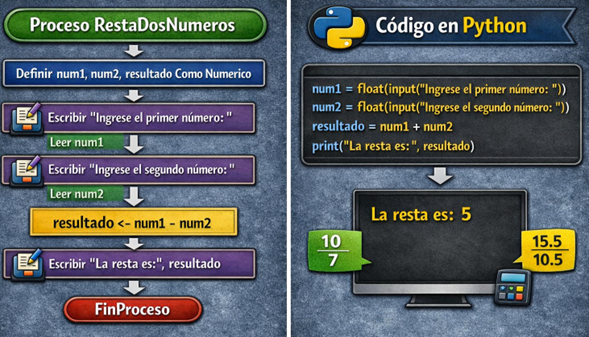
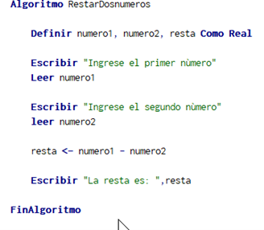

| El reto para esta ocasión consiste en entender el algoritmo, y una vez comprendido el algoritmo de resta de dos números, se propone el siguiente reto para fortalecer la lógica y el manejo de operaciones. El objetivo: calcular la diferencia entre tres números. Requisitos del algoritmo, solicitar tres números al usuario, almacenar los valores en variables, restar el segundo y el tercer número al primero, y mostrar el resultado al final. | |
|---|---|
| En las operaciones de resta, es fundamental tener claridad sobre el orden de los valores. A diferencia de la suma, la resta no es conmutativa, lo que significa que cambiar el orden de los números altera el resultado. Por esta razón se recomienda definir claramente qué valor será el inicial (minuendo) y cuáles serán los valores que se restarán (sustraendos). Esta práctica ayuda a evitar confusiones y garantizar resultados correctos. Además, es recomendable probar el algoritmo con diferentes valores, incluyendo números negativos para comprender mejor su comportamiento. | |
| Un error frecuente en este tipo de algoritmos es invertir el orden de los números al momento de realizar la operación, lo que genera resultados incorrectos. Ejemplo de un error en lógica: se espera calcular: 10 – 5, pero el algoritmo realiza: 5 – 10, el resultado incorrecto sería – 5. Este error suele ocurrir cuando no se tiene claridad sobre el orden en ue se deben procesar los datos. Recomendación, verificar siempre que la operación se realice en el orden correcto, especialmente en algoritmos donde el resultado depende directamente de la secuencia de los valores. Otro error común en Python es no convertir correctamente los datos de entrada, lo que puede generar problemas similares a los vistos en el algoritmo de suma. Comprender estos errores permite al programador mejorar su precisión y desarrollar algoritmos más confiables. | |
| A través del siguiente enlace podrá descargar el codigo equivalente al código de resta de dos números |
MEDELLÍN - COLOMBIA